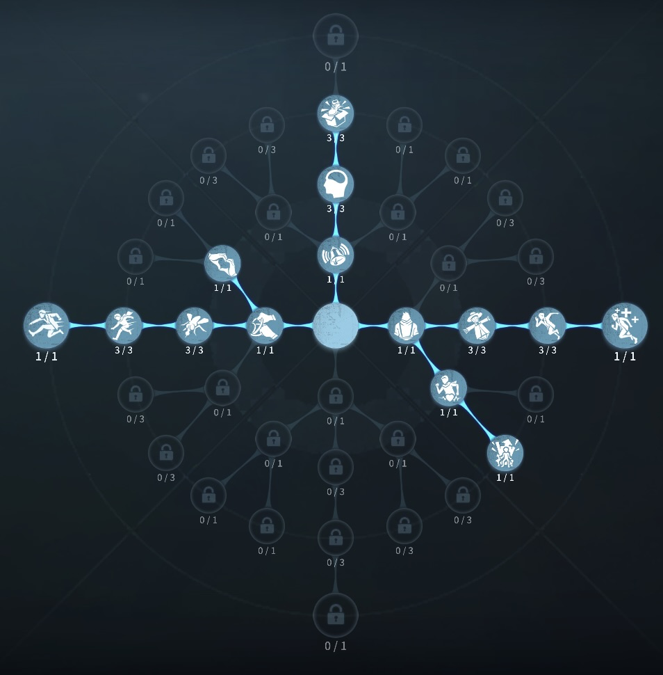
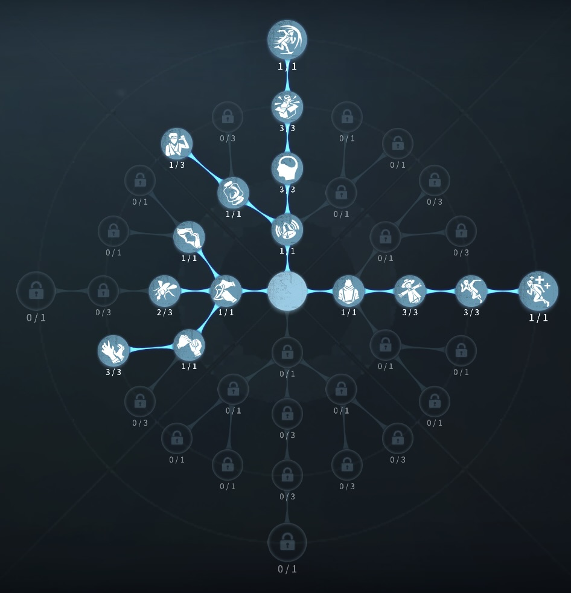

機械技師の評価
機械人形を使いダブル解読
外在特質と特徴
特質1:機械操縦
・機械技師は機械人形を持っている。機械人形は解読、救助、板窓操作などをすることができる。・機械人形は累計1ダメージ分の攻撃受けると破壊され消失し、使用者の現在位置がハンターヘ通知される
・機械技師の機械人形のゲージ低下速度が33％低下。最大約180秒間使える。
・機械人形は解読速度10％低下している。サバイバーが機械人形を操作しているときと機械人形が解読しているときの機械人形のゲージを消費する。
・ロケットチェアに吊られている時でも機械人形を操作できる。ただしゲージの消費量が約1.5倍になる。機械人形が破壊されるとゲージが50％減少する。
特質2:虚弱
・板窓操作15％低下。特質3:機械マスター
・解読速度10％上昇。機械人形を操作しているとき機械人形の解読速度10％上昇。特質4:臆病
・ほかのサバイバーが負傷するたびに2回まで重ね掛けでき1回につき解読速度が25％低下、ゲート開門速度15％低下。特徴
機械人形を駆使して、ダブル解読ができる。機械人形の使い方は多数あり、 耳鳴り要因、ゲート待機、救助など 椅子に吊られてからも操作できる。
機械人形でダメージの壁をしてもらうなど使いこなすと強いサバイバー
基本的な立ち回り方
1. 追われた時
機械人形を見つけられない所に召喚しておき、機械人形が見つからないようにチェイスをしよう！
椅子に吊られても機械人形を操作でき、実質、救助者を省いて3つの解読機を回すことができる。
2. 追われない時
解読に専念しよう！
中盤にさしかかった場合、ゲート前待機、耳鳴り要因などに活用してもよい
おすすめの内在人格
膝蓋腱反射型人格
この内在人格は、ウェーバーの法則を採用することでファーストチェイスに入っても即一撃を避ける、観客効果で解読を早める人格

フライホイール型人格
この内在人格は、尻に火を採用することで板先倒しを間に合うようにし、生存3に振ることで風船状態時に機械人形を壊すなら、もがくよ！という人格


みんなのコメント